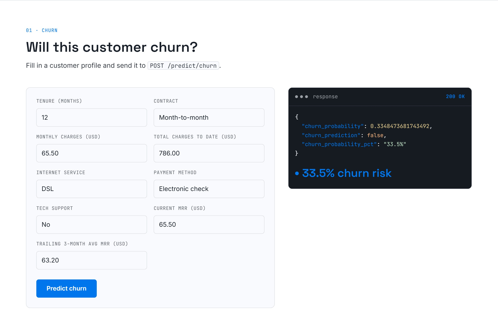

01 · MLOps · Python, Dagster, MLflow, LightGBM, FastAPI, Evidently, Docker
Churn prediction & revenue forecasting pipeline
Dagster orchestrates ingestion through training; MLflow promotes models by metric, FastAPI serves them, and an Evidently drift sensor triggers retraining.
Result
0.80 recall
Threshold set by the cost of a missed churner, not left at 0.5. ROC-AUC 0.84; 107 tests in CI.
Limit
0.50 precision
Half the flagged list are false alarms. Forecast RMSE 38.96 barely beats the naive 39.06.